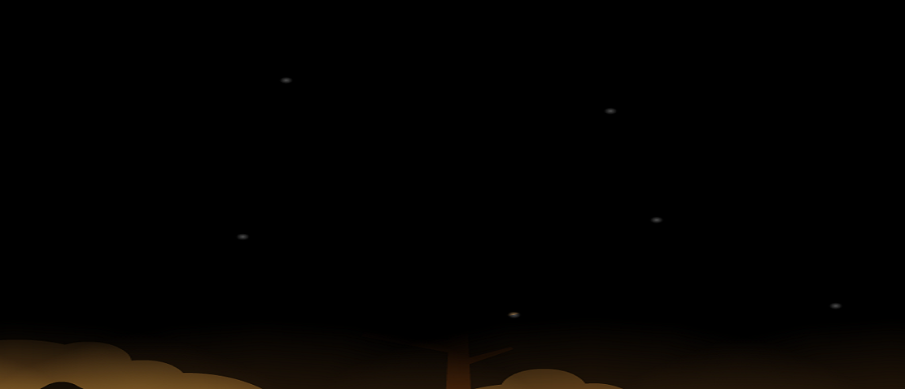

Tommy é a personagem principal do nosso jogo, ele começa como um rapazinho de sete anos que tem muitos medos e não recebe atenção suficiente dos pais para brincarem com ele. Sempre que chega a altura de enfrentar um medo Tommy entra no seu imaginário e tem de enfrentar uma encarnação desse medo que tem de ser superado. Na primeira etapa do jogo Tommy tem sete anos, na segunda tem doze anos e na terceira tem dezoito anos.
Haze
Originalmente o cão de peluche de Tommy, Haze ganha vida na imaginação de Tommy e guia-o por algumas partes do jogo. Quando o Tommy está com medo Haze funciona como um guia e um amigo para todas as horas mas também como um mentor do pequeno Tommy e companheiro quando ele é mais velho.
Gameplay
Os poderes são diversos, salta mais, corre mais, torna-te pequeno, entre muitos outros.
Combina estes poderes que irás obter e atreve-te a resolver desde os puzzles mais fáceis até alguns mais complexos.Duas personagens jogáveis para resolver puzzles com as suas características únicas.

Game Section
“Dreads of your Imagination” é um jogo ao estilo “Rayman Origins” com o nivel de puzzles que motiva o pensamento como num “Legend of Zelda” no qual o personagem principal tem de enfrentar os seus medos e crescer com as suas experiências num mundo na sua imaginação. Para isso terá a ajuda da encarnação do seu mais fiel companheiro: o seu cão de peluche chamado Haze que o guiará e o ajudará a enfrentar os medos que o prendem garantindo assim um crescimento saudável do rapaz.
Technology Highlights
Mecânica de transformação dá ao jogador mais engajamento e imersividade no mundo em que se encontra. Puzzles de luz e escuridão dão a sensação ao jogador de medo do escuro tal como pretendido. Controlar duas personagens permite ao jogador ver o mundo de perspetivas diferentes.
Team Section
Somos uma pequena equipa constituida por três elementos do IST - Taguspark, com Licenciatura em Engenharia Informática e de Computadores. Actualmente estamos no Mestrado sendo Dreads of your Imagination, fruto do trabalho na cadeira de Design de Jogos.